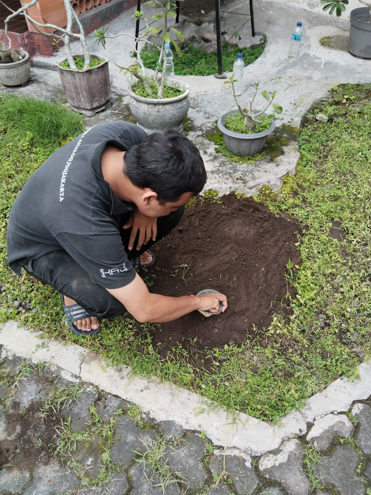

Kegiatan Biopori
Berikut adalah kegiatan yang dilakukan dalam program biopori.
Pemasangan Biopori
Pemasangan biopori dilakukan dengan menggunakan bor manual untuk meletakkan pipa biopori yang telah dilubangi.
Monitoring Biopori
Monitoring dilakukan untuk memastikan bahwa pipa biopori berfungsi dengan baik dan tidak tersumbat oleh kotoran.
